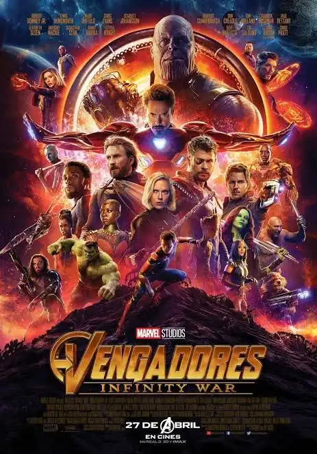
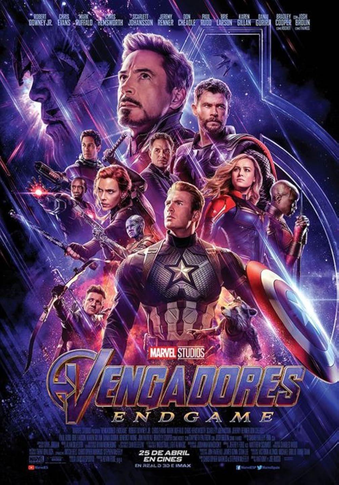
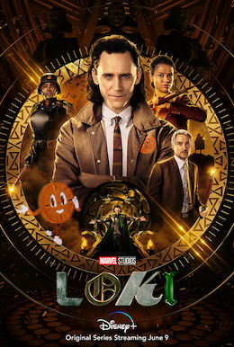
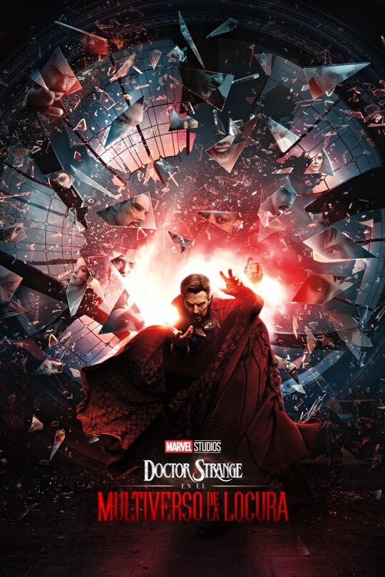
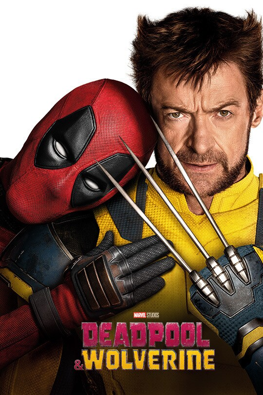

1
Punto de partida — Escisión
Capitán América: Civil War
Divide a los Vengadores en dos bandos y presenta a un T'Challa y un Spider-Man que serán claves más adelante. El origen de la desconfianza que Doomsday hereda.
Diez piezas del rompecabezas, en el orden en que conviene verlas, para llegar a Doomsday sabiendo quién es quién y por qué el multiverso está a punto de colapsar.
Punto de partida — Escisión
Divide a los Vengadores en dos bandos y presenta a un T'Challa y un Spider-Man que serán claves más adelante. El origen de la desconfianza que Doomsday hereda.

La primera grieta
Introduce la magia, el Ojo de Agamotto y la existencia de universos paralelos: la base teórica de todo lo que rompe la realidad después.

Las Gemas del Infinito
Thanos reúne las Gemas y ejecuta el Chasquido. Necesario para entender qué está en juego cuando alguien más pretende controlar la realidad.

Cierre de una era
El viaje en el tiempo abre oficialmente la puerta a las variantes y líneas temporales alternas que después explota el multiverso.

El multiverso, oficialmente
Presenta la Línea Temporal Sagrada y a Kang. Aunque es serie, es la pieza más importante para entender por qué el multiverso ahora está desprotegido.

Illuminati y variantes
Muestra el Illuminati de la Tierra-838 y a un Profesor X, sentando las bases de por qué otras versiones de héroes ya existen en paralelo.

Universos que colisionan
Confirma en pantalla que múltiples versiones de un mismo personaje pueden cruzar universos, algo esencial para Doomsday.

Fox entra al MCU
Integra oficialmente a los X-Men y al universo Fox dentro del MCU, y deja claro que la "Autoridad de Variación Temporal" ya no cuida el multiverso.

Otra Tierra, otra familia
Presenta a la Primera Familia en su propia realidad y siembra la conexión con Doom, el antagonista central de Doomsday.

La pieza más reciente
Última entrada antes del estreno: mantiene al día el arco de Peter Parker y su lugar dentro de los Vengadores que se están formando.